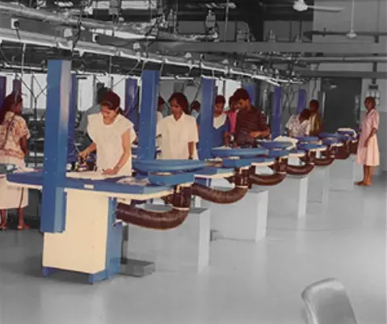
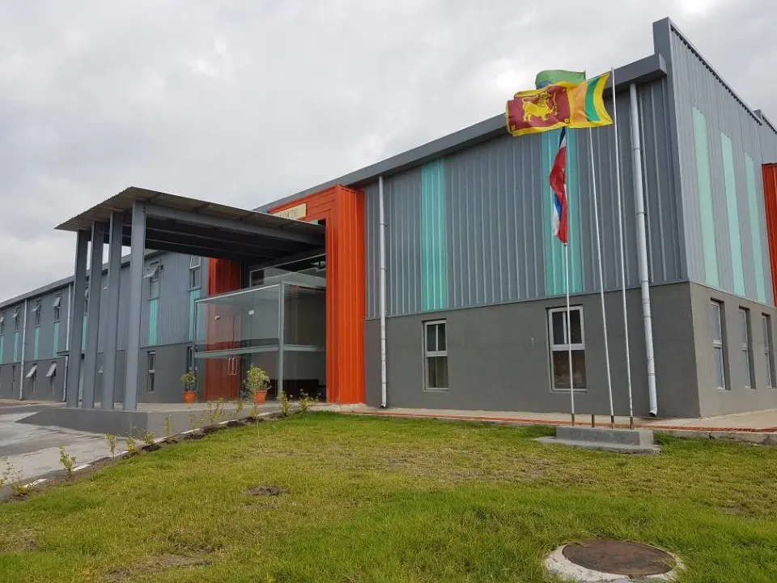

History Early in the 1990s, a tiny, family-run clothing company called SILQUE was established with the intention of creating dependable, well-made everyday clothing. At a period when mass-produced fashion was growing in popularity, the firm started out in a small workshop and focused on simple clothing that stressed comfort, durability, and simplicity.

As the 2000s approached, the company adjusted to shifting fashion trends while upholding its fundamental principles of practicality and simple design. SILQUE was able to expand its operations and reach a larger audience thanks to advancements in production techniques and the implementation of contemporary retail strategies.
Today, SILQUE reflects decades of experience in the clothing industry, blending its heritage of quality and simplicity with contemporary design. The brand continues to evolve while staying true to the principles established at its inception in the 1990s.Vision
To become a trusted fashion brand recognized
for quality and minimal design.
Mission
Deliver affordable fashion without
compromising comfort or style.
Values
Quality, transparency, and customer satisfaction.